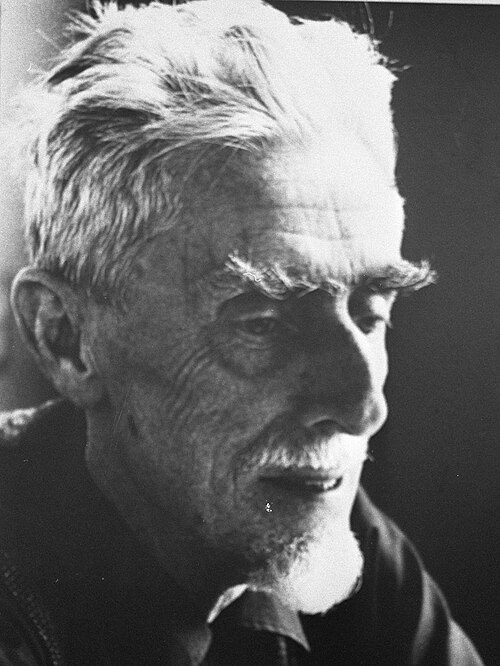

Where Dutch golden age masterpieces, world-changing courts, and mind-bending illusions meet — packed with adventures for the whole family
Dutch Golden Age Masterpieces
One of the Netherlands' best art museums, the Mauritshuis features Dutch golden age art by Vermeer, Rembrandt, Rubens, and many others. This so-called "mini-Rijksmuseum" is more intimate and less overwhelming than its bigger cousin in Amsterdam — and well worth a visit.
Seat of Dutch Political Power
The castle-like Binnenhof complex, overlooking Hofvijver lake right in the center of The Hague, is the seat of Dutch political power. The prime minister's office is here, and it's also the meeting place of the two-house parliament, the Staten-Generaal. The complex is undergoing an ambitious, multi-year renovation — check ahead for open sections.
Mind-Bending Optical Art
Celebrating Dutch optical illusionist M.C. Escher (1898–1972), this thoughtful exhibit is crowd-pleasing, supremely engaging, and deeper than you might expect — much like the artist's works. The building itself — the former winter palace of Queen Mother Emma, with far-out chandeliers by Dutch artist Hans van Bentem — is also worth a look. Entry: €12.50. Open Tuesday–Sunday, 11:00–17:00.
International Court of Justice
The palace houses the International Court of Justice and the Permanent Court of Arbitration. These two courts attempt to reach amicable settlements for international disagreements, such as border disputes. While the judicial process is interesting, the building itself is the big draw. A free visitors center offers multimedia exhibits about the building and the courts.
The Dutch Coney Island
This Dutch Coney Island, with its broad sandy beach, is at its liveliest on sunny summer afternoons — but its biggest appeal is watching urbanites from all over South Holland enjoy a day at the seashore. Dominating the scene is the long double-decker pleasure pier: shops down below, a boardwalk up top, and a bungee-jumping pavilion at the far end. A café-lined promenade stretches along the sand.
Escher in the Palace — A Closer Look
The exhibit traces both Escher's life and his artistic evolution. As a young man, Escher fell in love with Italy, and his perspective-driven works built a foundation that served him well later in life. His art eventually shifted from landscapes of his beloved Italy to what have been termed "mindscapes" — fantastical, impossible worlds.

His Life & Journey
Maurits Cornelis Escher was born on June 17, 1898 in Leeuwarden, the Netherlands. His father was a civil engineer — one of eight Dutch engineers invited by the Japanese Emperor to modernize Japan's water infrastructure. Though his parents hoped he'd become an architect, a teacher at art school in Haarlem recognized his graphic talent and redirected him toward printmaking.
As a young man Escher fell deeply in love with Italy, and his perspective-driven works — of everything from jagged coastlines to St. Peter's Basilica — built a visual foundation that served him throughout his life. During travels to Spain in 1922 and again in 1936, he visited the Alhambra in Granada and became obsessed with the Moorish tile patterns: infinitely repeating shapes that locked together without gaps.
The rise of Mussolini's fascism led to Escher's departure from Italy with his family, and an itinerant period as he moved from place to place before finally settling in the Dutch town of Baarn. Here Escher synthesized his various artistic obsessions: perspective, reflections, metamorphoses, impossible architecture, and tessellations. His art shifted from the real landscapes of Italy to "mindscapes" — fantastical, impossible worlds.
He became internationally famous in the 1950s after his work gained wider attention. In 1955 he received a knighthood in the Order of Orange-Nassau. He completed his last woodcut, Snakes, in 1969 and passed away on March 27, 1972.
Trivia & Surprises
Extra stories from The Hague — things that deserve a closer look. Tap to reveal each answer.